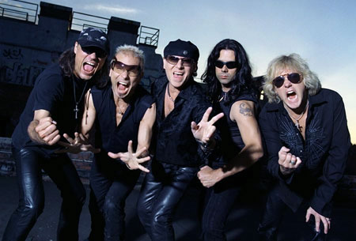

Sting in the Tail and the future (2010-present)

In November 2009, Scorpions announced that their 17th studio album, Sting in the Tail, would be released in early 2010, recorded in Hannover with Swedish producers Mikael "Nord" Andersson and Martin Hansen. Sting in the Tail was released on March 23, 2010.
On January 24, 2010, the band announced that Sting in the Tail will be their last album and that the tour supporting it will be their final tour, although the band has since decided to continue to record after the tour is over. Dokken was scheduled to open for them but canceled after a dispute. The tour is expected to end in 2012 or 2013.
On 6 April 2010, Scorpions were enshrined in Hollywood's Rock Walk in a handprint ceremony, with the band members placing their hands in a long slab of wet cement. The slab will be placed in the ground next to other musical artists on the Rock Walk.
According to bassist Pawel Maciwoda, Scorpions will enter the studio in the fall of 2011 to re-record versions of their older material. At the beginning this retro collection was tentatively due for release in early 2012. The album was titled Comeblack and was released on 7 November 2011.
Frontman Klaus Meine was asked in a July 2011 interview about the future of Scorpions and whether the band was going to make another album. He replied, "Our newest project comes out in the next few months. It gives you a chance to experience the Scorpions in 3D. You can actually feel the smoke string out of the guitar like it is a live show. It is an incredible experience. The DVD features our concerts in 3D in Germany. We are just about to do the mix and it should be in the Middle East and Saudi Arabia hopefully soon. Indeed, the strong 3D technology makes us feel like pioneers after all these years (he says, laughing). We have an album coming out later this year featuring classics. You know our love for them. The '60s was the era for our inspiration. Our movie/documentary also is soon to be released. We have cameras with us on tours, so this documentary is being made during our tours. It also gives you a picture of the Scorpions career and journey."
Almost a year in advance it was announced Scorpions would headline the Wacken Open Air Festival on 4 August.
Despite ongoing rumours of a break up or retirement, guitarist Matthias Jabs told AZ Central on June 12, 2012 that the Scorpions are not splitting up at all. A month later, Jabs told Billboard magazine that the band has been working on an album that will contain unreleased songs they recorded for the albums Blackout, Love at First Sting, Savage Amusement and Crazy World and plan to release it in 2013.